Independent preview verification on 1 November 2026. Head 42e7213334f2acb1e9cf1d4005bb208bfb7217f3.
PR 1598 · Issue 1527 · Preview
Routing is steer. No human sign-off exists. Waved through: none.
| Head and authentication | PASS | Doctor matched the preview head and confirmed a signed-in mock account. |
|---|---|---|
| Editor suite | PASS | 404 files and 4,817 tests passed. The focused 70-test run also passed. |
| Seeded interleaving | PASS | Seeds 1, 7, 42 and 1527 pass on head and merge base. All four fail on d6f6404eafa5190267282b904096b1098769a915, parent of 89a7926b3. |
| Typing and persistence | PASS | 16 cases. Hero heading, story heading, FAQ question and pricing title, at 1440 and 390 px. Each types 40 characters mid-word at 80 ms and zero delay, asserts text and caret after every character, then reloads. |
| Undo and redo | PASS | At both widths, one native undo removes the phrase and redo restores it. |
| Empty fields | PASS | At both widths, clearing a summary cell restores the focus-time value. A cleared FAQ answer stays empty after reload. |
| FAQ reorder | PASS | At both widths, Alt+Up moves the focused question. Text typed before and after the move stays in that row after reload. |
| Link with port | PASS | At both widths, each character of example.com:8080/path remains in the input. Saved href is https://example.com:8080/path and survives reload. The scheme is normalized by the app. |
| Recording regression | PASS | Fake camera, English fixture, pause mode, one run. Recorder title appeared in 245 ms, RUM 240 ms, outcome draft, two chunks. The mock recording was deleted. |
| Concurrent PR | NOTE | PR #1607 adds focus restoration to EditableText.handleFocus around committedValue, setDraftLength and registerFocusedCanvasDraft. PR #1598 removes those draft owners and replaces that handler, so the focus restoration must be reconciled with EditableTextElement, without restoring the deleted draft machinery. |
| Routing and authorization | NOTE | Routing is steer. William has not signed off. Nothing was merged or pushed. Waved through: none. |
The merge base already contains past fixes and passes these seeds. This is refactor preservation evidence, not a claimed merge-base red-to-green.
Historical parent d6f6404eafa5190267282b904096b1098769a915 AssertionError: seed 1, step 0, autosave snapshot: expected 'Original' to be '1-0-748 ' Tests 4 failed | 17 skipped (21) Merge base 66af49adf5da8ca3704ea733b6277b4aa3966766 Tests 4 passed | 17 skipped (21) Head 42e7213334f2acb1e9cf1d4005bb208bfb7217f3 Test Files 404 passed (404) Tests 4817 passed (4817)
Three alternating runs per preview, 150 characters per run for each field, on this Mac. Each isolated mock page held a hero, three stories, eight FAQ rows, summary and pricing. The listener measured input-event dispatch to the next animation frame. This measures frame scheduling in headless Chromium, not end-to-end human-perceived latency.
Load averages before measurement were 6.61, 7.01 and 5.62 on 10 logical CPUs. PR 1598 used 42e7213334f2acb1e9cf1d4005bb208bfb7217f3. PR 1590 used 2ea76ccb7c46a591359530a8e879272d6eb5869e. No measured sample exceeded 50 ms. The older numbers in the PR body are historical and use a different run.
| PR | Field | p50 ms | p95 ms | Max ms |
|---|---|---|---|---|
| 1598 | hero | 14.0 | 14.8 | 15.4 |
| 1590 | hero | 14.1 | 14.9 | 16.7 |
| 1598 | story | 13.7 | 14.8 | 15.3 |
| 1590 | story | 13.8 | 14.9 | 16.6 |
The baseline is the mock fixture on PR 1590. It is main plus a CSS token change. The after images are from the verified PR 1598 preview after typing and reload. Screenshots show rendered content; the linked assertions prove exact characters and caret positions.
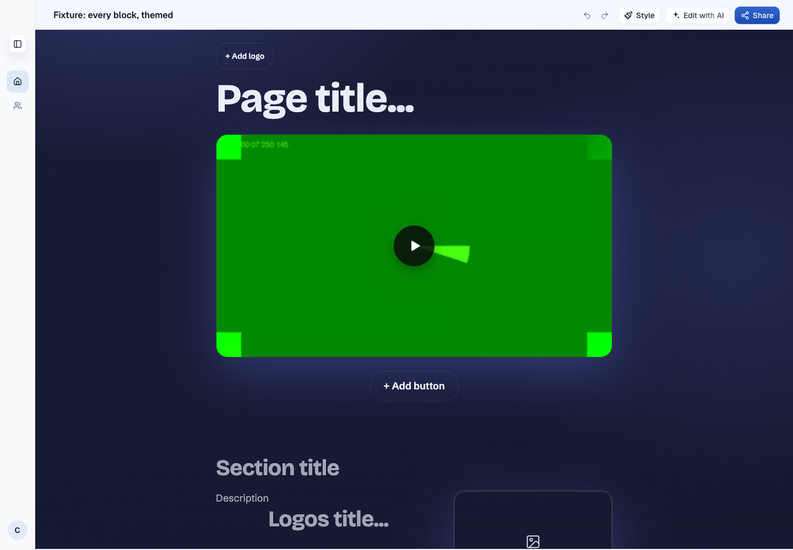
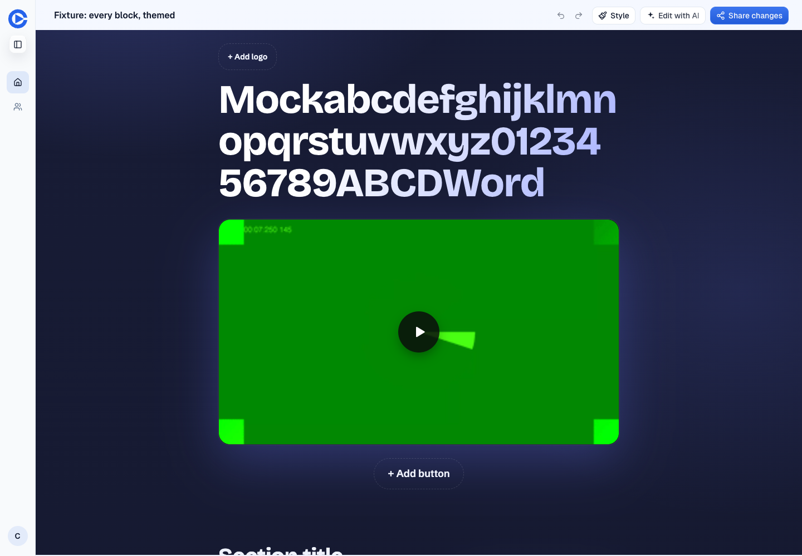
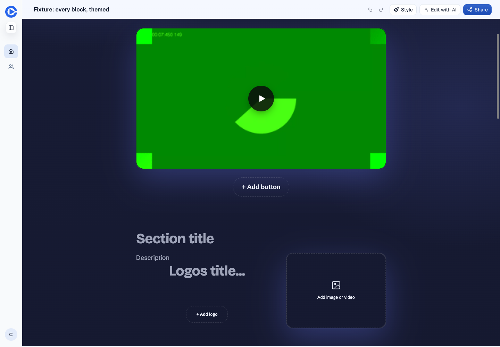
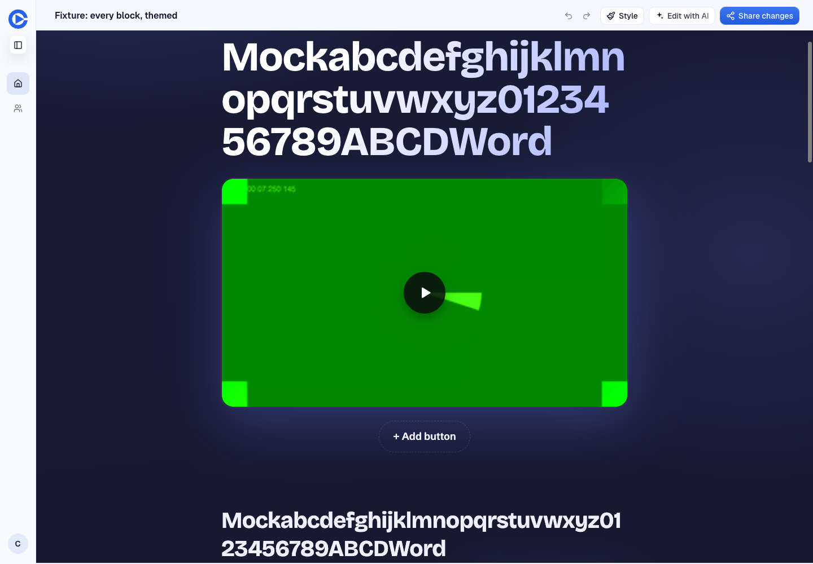
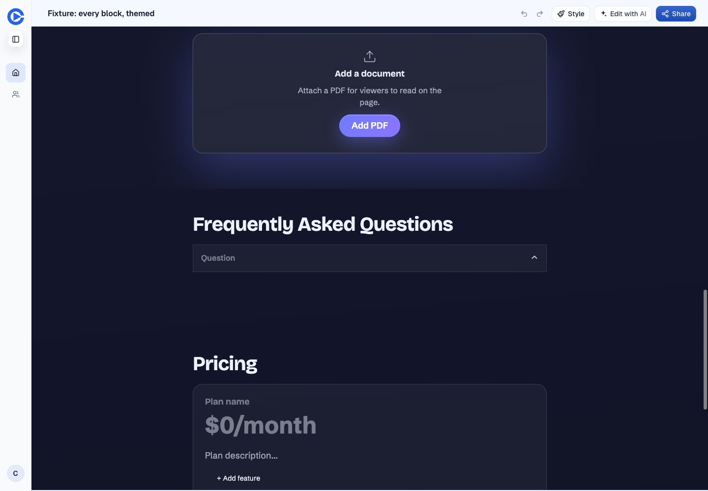
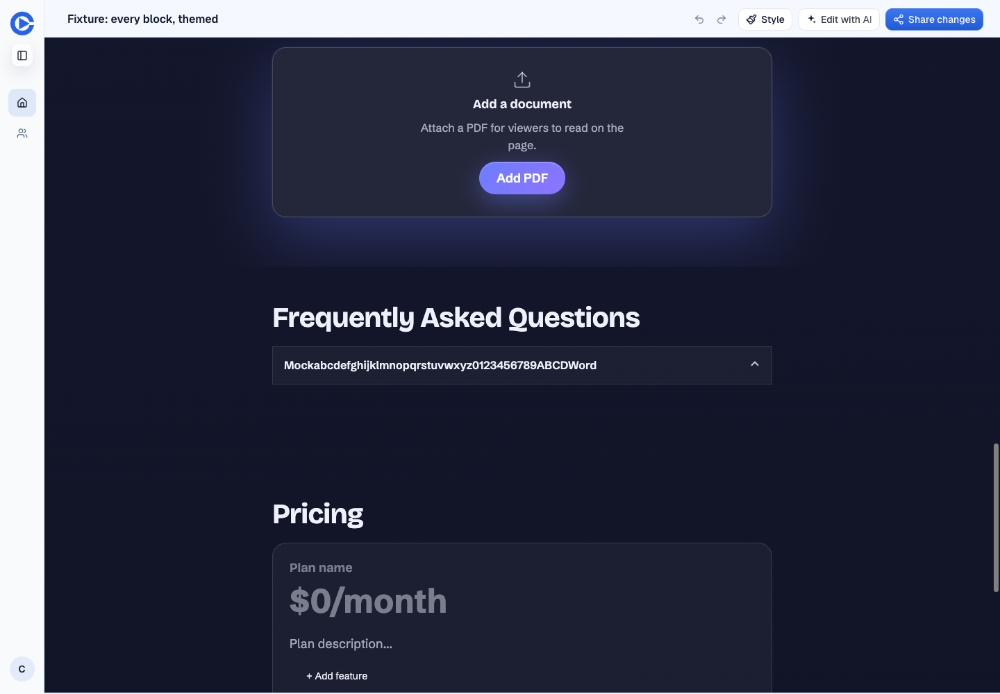
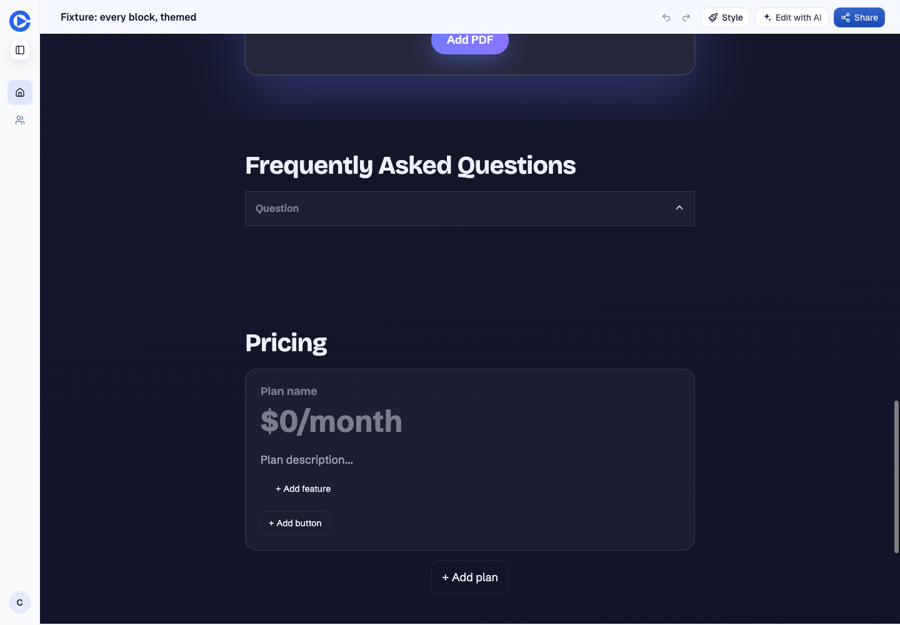
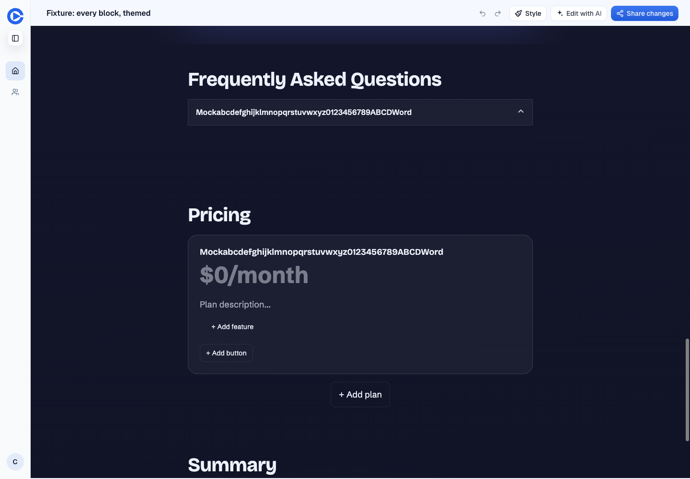
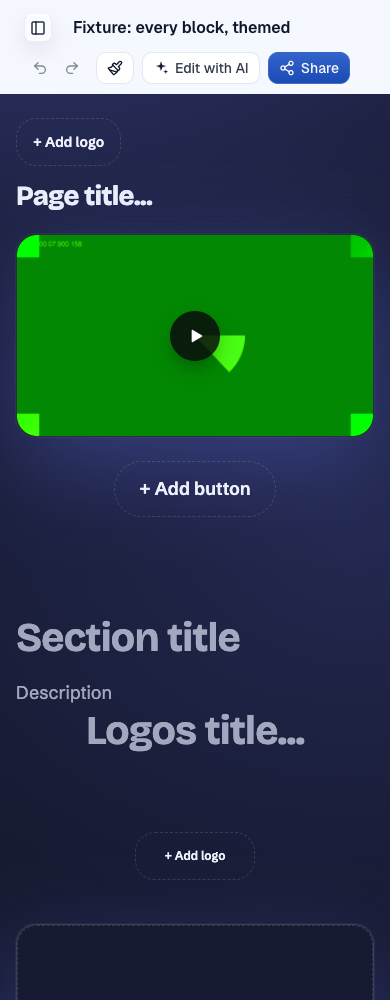
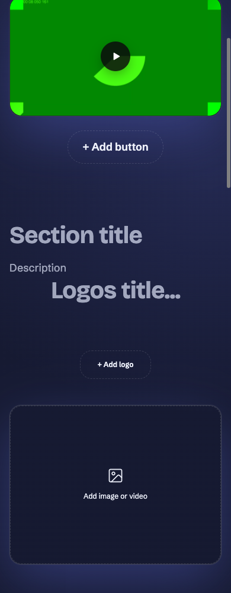
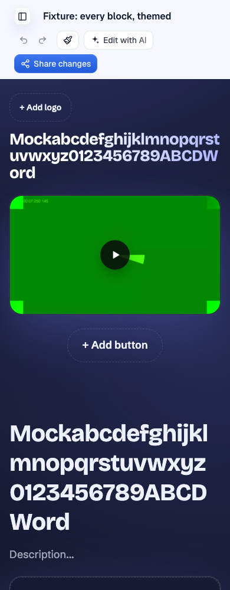
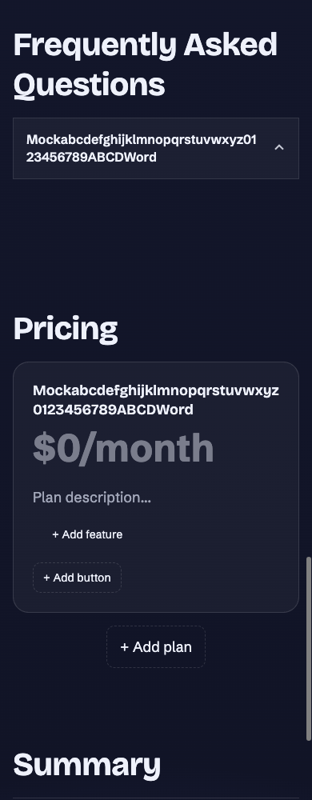
{
"requests": 2739,
"responses": 2738,
"failures": 1,
"non2xx": 0,
"previewSaveResponses": 61,
"previewSaveStatuses": [
200
]
}The browser logger recorded no console errors or warnings. One mock-video thumbnail request was blocked by Chromium with net::ERR_BLOCKED_BY_ORB late in the run. This did not affect the text assertions. Preview saves returned 200 and reload assertions verified the stored text.
PR 1598 received editor autosaves to the seeded fixture e300555e-6ee9-5dda-aecb-26f50e242a73. Changes covered hero and story text, the logo title selected during initial test setup, FAQ rows, pricing title, summary cells and a story link. The changed fields were restored and read back. The latency page f968d1bb-a382-465a-b38e-1b9c36372e70 was created, edited and deleted. One fake-camera QA recording was created and deleted.
PR 1590 received only the isolated latency page 914c8408-ea79-47c2-86fd-0cbec822ecab, which was created, edited and deleted. Its baseline fixture was read only. No direct D1 SQL writes, production writes, staging writes, code edits, branch pushes or merges occurred.